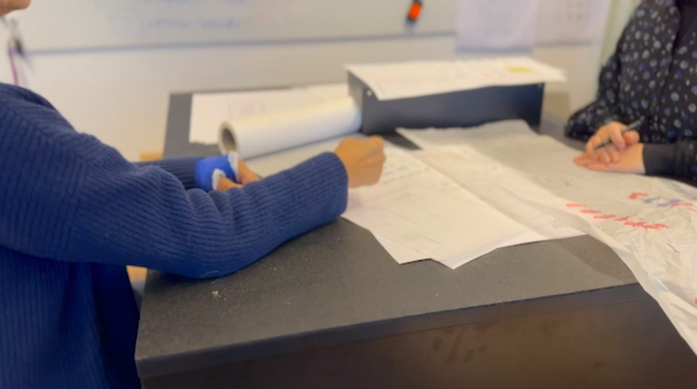

Tema 5: Grundlæggende indhold
05.01.02 Pilotsite
I dette tema, lærte jeg, hvordan man videoredigerer, i Premiere Pro. Jeg har lært, hvordan jeg laver en naturligt blød overgang fra et klip til det næste, og dermed klipper en video sammen, på en ordentlig måde. Jeg lærte nyt kameraudstyr at kende, samt, hvordan RØDE mikrofon-appen fungerer, i forbindelse med optagelsen, af vores videointerview.
Jeg fik styrket mine kompetencer, indenfor netværk, ved at række ud til tidligere arbejdsgivere og omgangskreds, da vi skulle finde den rette person, at interviewe, indenfor meget kort varsel. Ligeledes, lærte jeg at lave en PechaKucha præsentation, hvor jeg timede min mundtlige præsentation, i samspil med min gruppe, så vi på en præcis og fængende måde, fik pitchet vores redesign, for klassen.
